Cannondale Optimo 2 · 13 gün
Road Bike Rental Japan Kyoto
★ 5,0(56 yorum)
¥85.800 ≈ 26.500 ₺
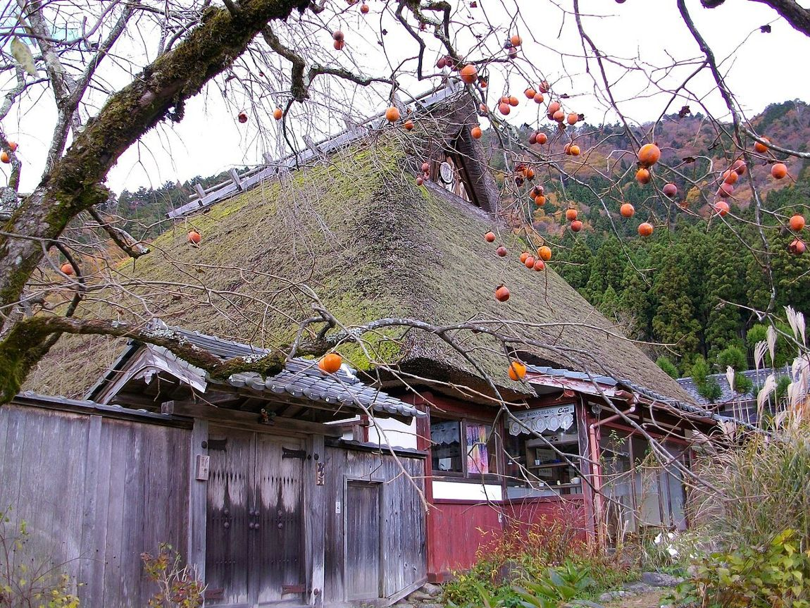
Road Bike Rental Japan Kyoto
★ 5,0(56 yorum)
¥85.800 ≈ 26.500 ₺
Road Bike Rental Japan Kyoto
★ 5,0(56 yorum)
¥69.000 ≈ 21.300 ₺
Road Bike Rental Japan Kyoto
★ 5,0(56 yorum)
¥57.200 ≈ 17.700 ₺
レンタサイクル京都 ecoトリップ
★ 4,7(1,1 B yorum)
¥1.000–2.000 / gün
京町屋ゲストハウス まくや
★ 4,6(52 yorum)
¥3.000–4.000 / gece
知恩院 和順会館
★ 4,4(380 yorum)
¥10.450 / gece
Utano Youth Hostel Kyoto
★ 4,4(532 yorum)
yatakhane
Farmhouse NaNa Kameoka
★ 4,8(20 yorum)
¥11.000 · Cmt ¥14.000
おもてなしの宿 渓山閣
★ 3,9(1.801 yorum)
¥12.100
節恵庵 南丹
★ 4,9(9 yorum)
¥6.600
とりこと舎 南丹
★ 4,9(26 yorum)
¥13.700
かやぶきのお宿 またべ
★ 4,5(95 yorum)
¥9.900 / gece
美山町自然文化村 河鹿荘
★ 4,1(538 yorum)
¥13.200
民宿 久や 美山
★ 4,7(38 yorum)
¥30.000 (2 kişi, ev tamamı)
美山ハイマートユースホステル
★ 4,7(48 yorum)
¥7.500
鮎茶屋料理旅館 角屋
★ 4,2(30 yorum)
¥9.570 · botan-nabe ¥15.730
KIX → Kyoto · JR Haruka ≈80 dk · ¥2.200 · Gece: Guesthouse Makuya
11 km · +21 m · Gece: Guesthouse Makuya
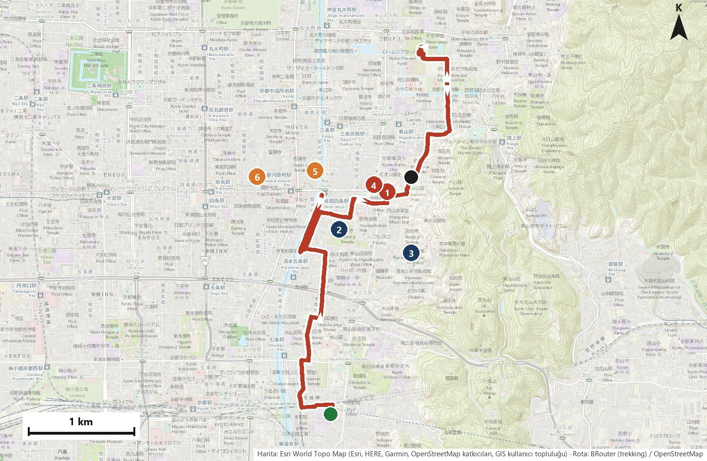
18 km · +77 m · Gece: Guesthouse Makuya
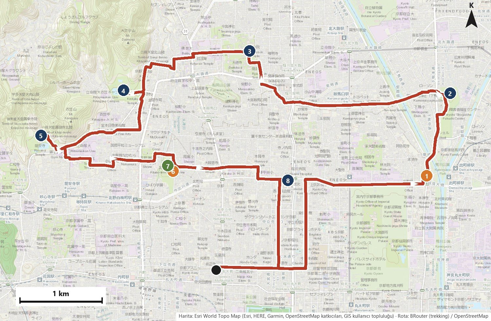
42 km · +43 m · Gece: Guesthouse Makuya
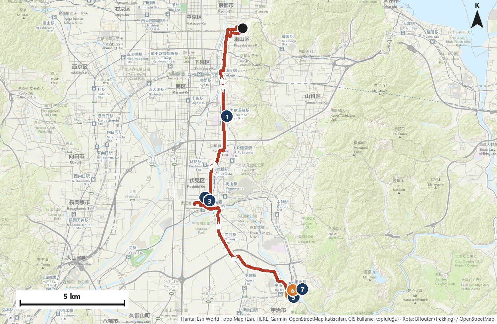
37 km · +355 m · Gece: Guesthouse Makuya
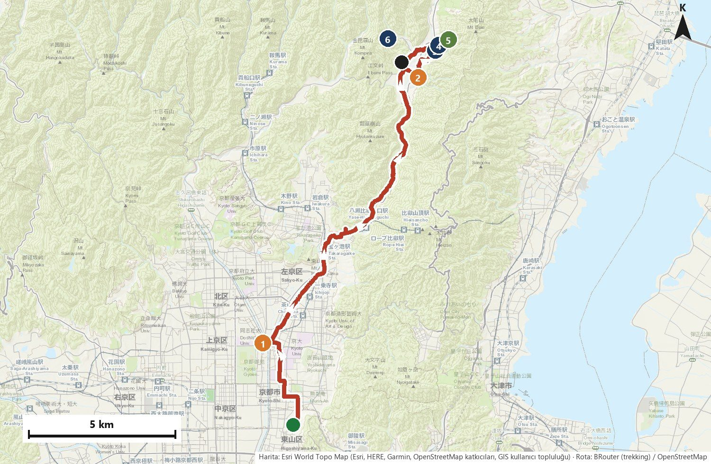
34 km · +531 m · Gece: Guesthouse Makuya
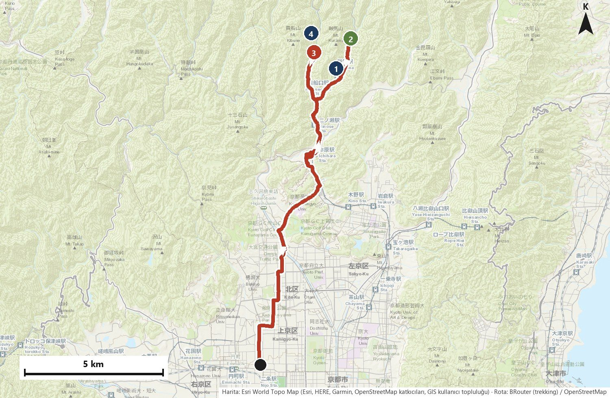
25 km · +320 m · Gece: Farmhouse NaNa
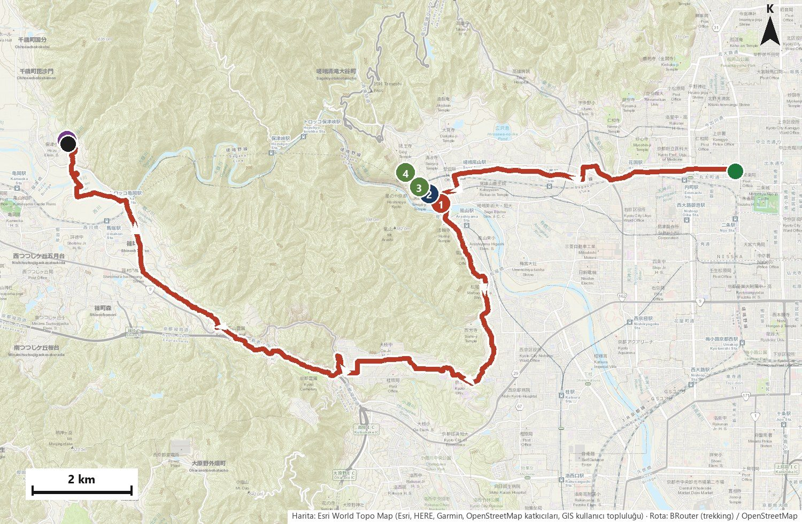
51 km · +501 m · Gece: Setsukeian
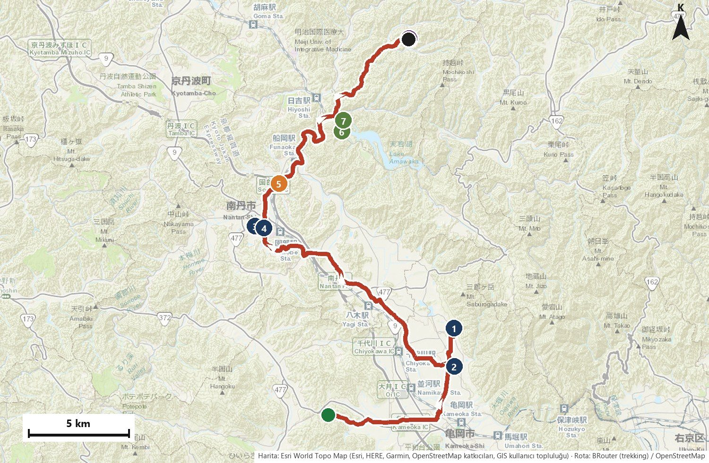
21 km · +227 m · Gece: Kayabuki no Oyado Matabe
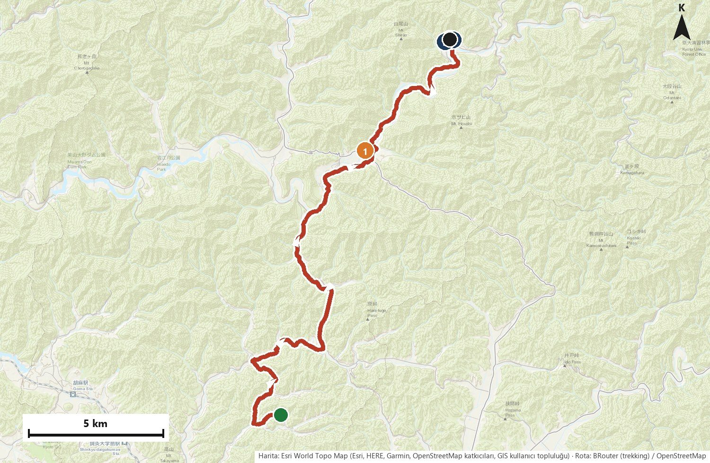
31 km · +597 m · Gece: Matabe (2. gece)
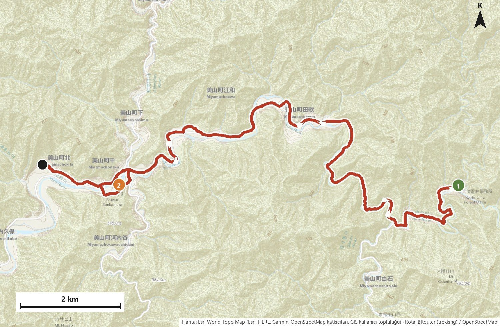
22 km · +192 m · Gece: Miyama Heimat Youth Hostel
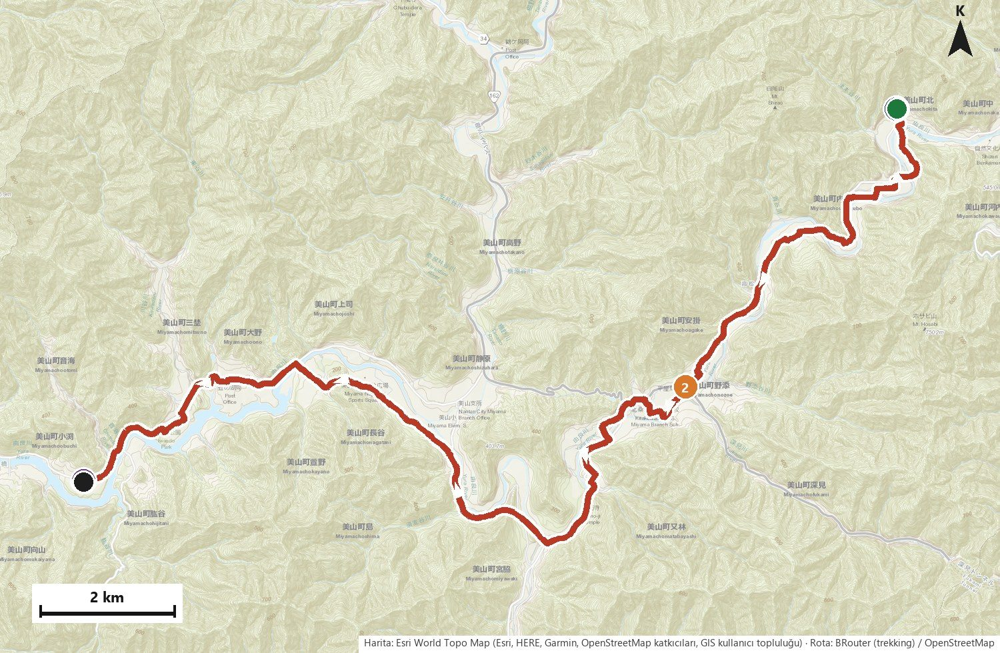
16 km · +182 m · Gece: Ayu-jaya Ryōri Ryokan Kadoya
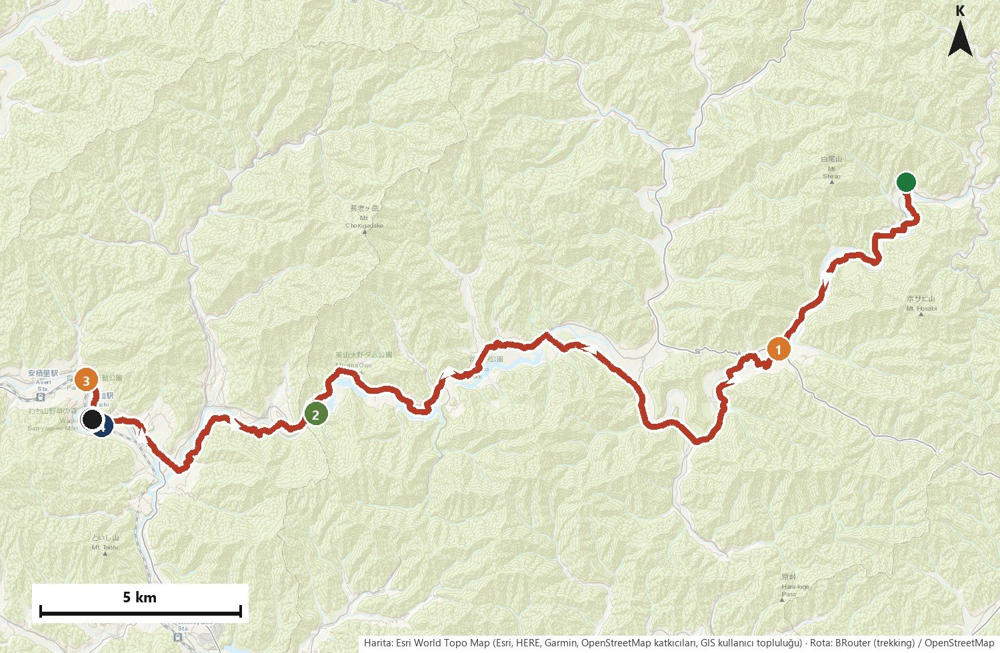
55 km · +574 m · Gece: Farmhouse NaNa
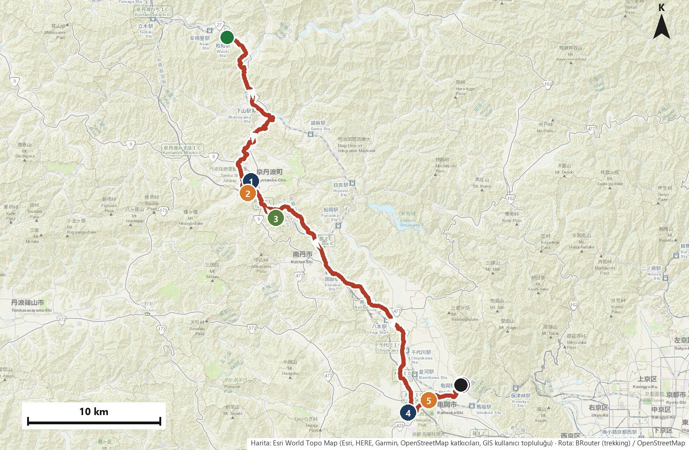
34 km · +668 m · Gece: Guesthouse Makuya
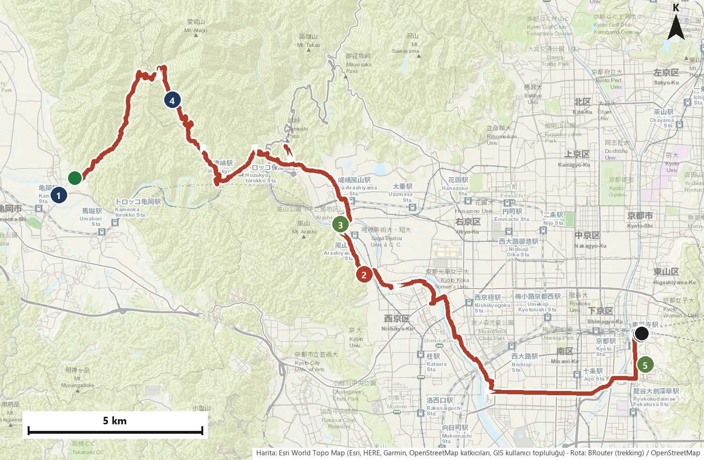
Kyoto → KIX · JR Haruka ≈80 dk · ¥2.200
| Bisiklet kiralama (13 gün) | ¥85.800 | 26.521 ₺ |
| Konaklama (14 gece) | ¥93.270 | 28.830 ₺ |
| Yemek (dahil olmayanlar) | ¥32.000 | 9.891 ₺ |
| Giriş ücretleri | ¥7.000 | 2.164 ₺ |
| Ulaşım | ¥5.500 | 1.700 ₺ |
| İletişim | ¥2.500 | 773 ₺ |
| TOPLAM (uçak hariç) | ¥226.070 | 69.878 ₺ |
| 65.000 ₺ seçeneği (yol bisikleti 6 Kasım’dan) | ¥209.270 | 64.685 ₺ |